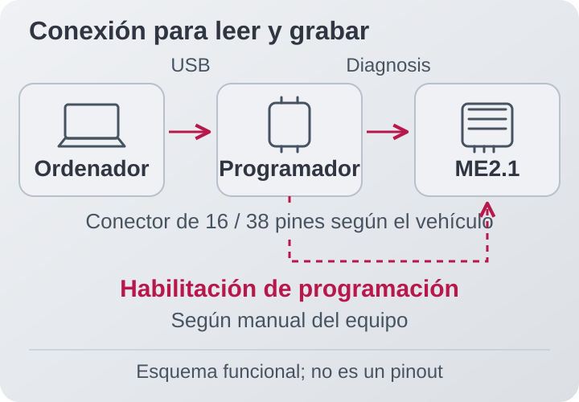
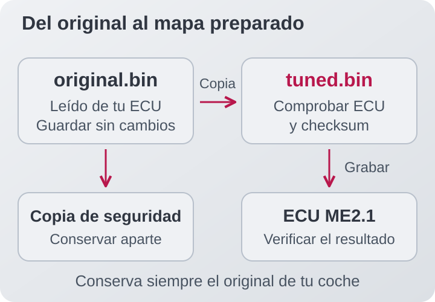

Antes de empezar
Grabar un mapa significa escribir en la memoria de la ECU el archivo que contiene su programa y calibraciones. Esta guía explica cómo pasar de tu archivo original a uno preparado para tu coche; no explica cómo modificar las tablas de combustible o encendido.
Un programador compatible
Interfaz, programa y controladores que admitan tu ME2.1. Galletto 1260 es una opción documentada: su lista incluye Mercedes Bosch ME2.1 / 28F200BB / R/W (lectura y escritura). Confirma el soporte de tu equipo antes de comprarlo. [1]
La conexión adecuada
Cable para la toma de diagnosis de tu coche y conexión de habilitación de programación según el manual. Si lleva toma Mercedes de 38 contactos, confirma también el cableado del adaptador.
Alimentación estable
Una fuente de apoyo adecuada para programación y el portátil con alimentación y suspensión desactivada. Mantén la tensión indicada por el fabricante del equipo. [2]
Tu archivo preparado
Una copia original de tu ECU y una versión modificada expresamente para ella. El dashboard y el ELM327 sirven para diagnosis; no sustituyen al programador.
01Identifica tu centralita
Fotografía la etiqueta y guarda las referencias Bosch y Mercedes. Después, usa la función de identificación del programador para anotar la versión de software. Comprueba que el protocolo seleccionado corresponde a Bosch ME2.1 de Mercedes.
Un CLK, SLK o Clase C de otro año puede llevar una ECU diferente. Esta guía no se aplica automáticamente a ME2.0, ME2.8 ni a Siemens de los modelos EVO. Si la identificación no coincide, resuelve esa diferencia antes de leer o escribir.
02Prepara la conexión
Con el motor parado, conecta el equipo siguiendo su manual: alimentación de apoyo, interfaz al ordenador y cable de diagnosis al coche. Cierra el dashboard y cualquier otra aplicación que pueda intentar comunicarse con la ECU. Pon o quita el contacto cuando lo indique el programa.


Los procedimientos documentados de ME2.1 requieren habilitar la programación mediante una conexión adicional. El pin, la tensión y el momento de activación deben salir del manual de tu programador para esa ECU. Un adaptador que sirve para diagnosis puede no incluir esa conexión. [3]
La ilustración explica el recorrido, no la posición de los pines. Si falta el esquema correspondiente a tu ECU, pide al proveedor el cable o las instrucciones antes de continuar. Las conexiones en banco también requieren su esquema específico.
03Lee y guarda el original
- Selecciona la función de lectura (Read) y espera a que el programa confirme que ha terminado.
-
Guarda el archivo con un nombre reconocible, por ejemplo
CLK230_SW404_original.bin. Añade en la misma carpeta la foto de la etiqueta y la identificación leída. - Conserva otra copia fuera del portátil. Trabaja siempre sobre un duplicado.
Como comprobación adicional, haz una segunda lectura y compara ambos archivos completos. Si difieren, investiga la causa antes de usar uno como base. No confundas el tiempo de identificación con el de lectura: leer el archivo de programa y calibraciones puede tardar bastante más.
04Prepara el archivo correcto
Entrega tu lectura original a quien prepare la calibración, junto con las modificaciones del coche y el combustible utilizado. El archivo final debe corresponder a tu hardware y software: que proceda de otro «230 Kompressor» no basta.


Los binarios ME2.1 incluidos en este proyecto ocupan
262.144 bytes (256 KiB). Ese tamaño es una
referencia, no una prueba de compatibilidad. Un archivo
.xdf, .kp o .csv contiene
definiciones de mapas; no es el binario que se graba.
Confirma también el checksum, la comprobación interna de integridad del archivo. No des por hecho que el programador lo corrige: la lista histórica de FGTech no marca corrección automática para estas ME2.1. [4]
05Graba el nuevo mapa
Antes de pulsar «Write»
- Original guardado y archivo final comprobado.
- ECU identificada y protocolo correcto.
- Conexión de programación preparada según el manual.
- Alimentación estable y portátil sin suspensión.
Abre el archivo final y selecciona la función de escritura (Write / Program). Sigue los avisos del equipo para habilitar la programación y cambiar el estado del contacto. Los nombres de los botones y el orden exacto dependen del programador.
Espera a la confirmación final, incluida la verificación si el equipo la realiza. Durante la escritura, no arranques, desenchufes cables ni cortes la alimentación. No interpretes una pausa de la barra de progreso como permiso para desconectarlo.
06Comprueba el resultado
Al terminar, realiza la secuencia de contacto que indique el programa. Retira la conexión de habilitación y restaura el cableado normal cuando lo indique el manual.
Comprueba que la ECU sigue respondiendo, lee y guarda los errores y después verifica el arranque y el ralentí. Si el equipo permite volver a leer la misma región escrita, compara esa lectura con el archivo final. Una grabación correcta confirma la transferencia; no valida por sí sola la calibración a plena carga.
Para las comprobaciones de funcionamiento puedes usar nuestros dashboards de PC y Android. Valida la mezcla y el encendido con la instrumentación adecuada antes de exigir carga al motor.
Dudas habituales
¿Se puede hacer sin abrir la ECU?
Hay procedimientos de ME2.1 por diagnosis que no requieren abrir la carcasa. Eso no elimina la conexión de habilitación de programación. Confirma el procedimiento de tu referencia y equipo antes de desmontar nada. [3]
Lee bien, pero no me deja escribir. ¿Por qué?
Comprueba la habilitación de programación, el protocolo, la alimentación y la compatibilidad del archivo. Un enlace de diagnosis operativo solo confirma la comunicación; no demuestra que se cumplan los requisitos de escritura.
¿Qué hago si falla durante la grabación?
Guarda el mensaje de error y sigue el procedimiento de recuperación del fabricante. No cortes la alimentación por tu cuenta ni pruebes archivos o puentes al azar. Una escritura incompleta puede impedir el arranque y necesitar recuperación especializada.
¿Cuánto tarda?
Depende del equipo y del protocolo. Reserva tiempo para terminar sin prisas y toma como referencia los avisos del programa, no un tiempo fijo encontrado en un tutorial.
Fuentes y alcance
Resumen del proceso, acompañado de ilustraciones propias. El conexionado exacto y la secuencia de programación deben consultarse en el manual del equipo para la ECU identificada.
- Lista histórica Galletto 1260: protocolo ME2.1 / 28F200BB, lectura y escritura.
- Alientech, preguntas frecuentes: compatibilidad, modalidades de conexión y alimentación estable.
- Experiencia de programación ME2.1 en MHH Auto: habilitación adicional. El caso publicado es un S500; su pinout no se extrapola aquí a CLK, SLK o C.
- Lista FG Technology, septiembre de 2012: soporte de escritura y columna de checksum.